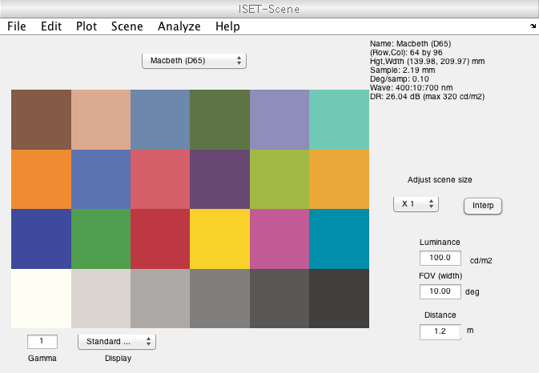

t_codeISETPref.m
ISETBIO preferences
Matlab preserves information for you in environmental preference variables. ISETBIO uses these variables to remember certain preferences. These preferences are accessed using the ieSessionGet and ieSessionSet functions.
NOTES: 1) Currently broken because it calls a script that no longer exists.
Copyright ImagEval Consultants, LLC, 2013
Contents
Check your stored ISET preferences
% At present, there are only a small number of stored preferences. % Please use the ieSessionGet/Set functions to read and set the % preferences. % One variable controls the display of waitbars ieSessionGet('waitbar') % A second controls the size of the font in the display windows ieSessionGet('font size')
ans =
1
ans =
0
The (logical) waitbar preference
% The waitbar preference determines whether or not a waitbar is shown % during certain potentially long computations. Examples are various % oiComputes and sensorComputes. % % It is often desirable to have the waitbar suppressed, say you are looping % through a calculation and just don't want them appearing on your screen % all the time. % % Something that takes a few seconds and might use wait bars scene = sceneCreate('slanted bar'); oi = oiCreate('human'); % This is a calculation that takes a few seconds. To see its progress with % a waitbar, you can run ieSessionSet('waitbar','on') oi = oiCompute(oi,scene);
To suppress the waitbar, you can run
ieSessionSet('waitbar','off') oi = oiCompute(oi,scene); disp('No wait bar, right?')
No wait bar, right?
The font size
% The best font size in the display windows varies enormously across % platforms. If the font is too small or large, you can adjust the size in % most of the windows (e.g., scene, oi, sensor, image). The adjustment in % one window will apply to all the windows. The font size is controlled % through the preference ieSessionGet('font size') % This number is a increment (or decrement) relative to the default fonts % in the Matlab display windows. Here is the font size in your current % scene window scene = sceneCreate; vcAddAndSelectObject(scene); sceneWindow drawnow pause(2) % To make the font larger, use the pull down "Edit | Change font size" or % use this command d = ieSessionGet('font delta'); ieSessionSet('font delta',d+2); sceneWindow drawnow pause(2) % To return it to the previous run d = ieSessionGet('font delta'); ieSessionSet('font delta',d-2); sceneWindow drawnow pause(2)
ans =
0
 Finally, you can see the pref list using the Matlab command getpref
iePref = getpref('ISET') % But don't do it directly. Use ieSessionSet/Get as above. ieSessionGet('waitbar') % And ... ieSessionSet('waitbar','on')
iePref =
waitbar: 0
fontDelta: 0
ans =
0